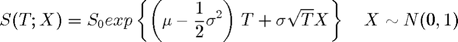
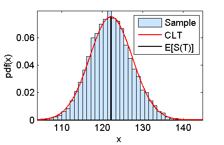

Contents
function demo_MC_BlackScholes
demo_MC_BlackScholes: MC calculation of E[ST]
Parameters for the simulation
S0 = 100; % initial asset price mu = 0.1; % drift sigma = 0.4; % volatility T = 2.0; % time in the future
Black-Scholes model

f_ST = @(x)(S0*exp((mu-0.5*sigma^2)*T+sigma*sqrt(T)*x)); R = 10.0; E_ST = expectedValue(f_ST,@normpdf,-R,R);
Sample mean
B = 10000; M = 200; X = randn(M,B); ST = f_ST(X); % B estimates of the sample mean E_ST_MC = mean(ST); % Each estimate is over a sample of size M
Monte Carlo error
![$$ \left< S(T) \right>_M \sim N\left(E[S(T)],std[S(T)]/\sqrt{M} \right) $$](demo_MC_BlackScholes_eq69343.png)
error_MC = std(ST(:))/sqrt(M);
CLT for the estimation of E[ST]
modelPdf = @(x)(normpdf(x,E_ST,error_MC)); figure(1); graphicalComparisonPdf(E_ST_MC,modelPdf) hold on; plot([E_ST E_ST], [0 modelPdf(E_ST)],'k') hold off; legend('Sample','CLT','E[S(T)]')